- 00000018WIA30104C20GYZ
- id_20083705.11
- Nov 19, 2024, 2:05:33 AM
Doing coil datapath diagnostic
The MCRv tool is a hardware module that emulates a coil when doing the coil datapath diagnostic test.
Introduction
| Tools and test equipment | |||
|---|---|---|---|
| Item | Quantity | Part number | Manufacturer |
| MCRv Tool Kit 1.5T or MCRv Lite Tool Kit 1.5T | 1 | 5182417-6 or 5182417-7 | - |
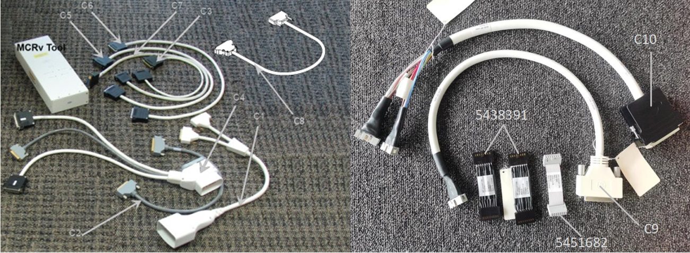
| Cable descriptions | |||
|---|---|---|---|
| Description | Quantity | Length | Cable callout |
| A port adaptor | 1 | 600 mm (~23.6 inches) | C1 |
| 37 pin sub-D, Male-Fem | 1 | 600 mm (~23.6 inches) | C2 |
| 8w8 Male-Fem | 1 | 600 mm (~23.6 inches) | C3 |
| P port adaptor | 1 | 600 mm (~23.6 inches) | C4 |
| 25 pin sub-D, Male-Fem | 1 | 1000 mm (~39.4 inches) | C5 |
| 16w16, Male-Fem | 2 | 1000 mm (~39.4 inches) | C6 |
| 16w16, Male-Male | 2 | 1000 mm (~39.4 inches) | C7 |
| 37 pin sub-D to 25 pin sub-D, Male-Fem | 1 | 1000 mm (~39.4 inches) | C8 |
| MCRv DC cable | 1 | 500 mm (~19.7 inches) | C9 |
| MCRv RF cable | 1 | 500 mm (~19.7 inches) | C10 |
Physically, the MCRv tool is a hardware module that emulates a coil. This module must be connected to the coil inputs or to other points along the coil cable path before starting the diagnostic. The MCRv tool generates known test signals and provides known loads that the diagnostic can measure to verify the correct connectivity between the points where the tool is connected and the rest of the system. The MCRv tool is supplied with a variety of cables that allow you to attach the tool to various points along the receive path.
- P1 and P2 on LPCA
- PA Port-E under the cradle top cover
- DPP RRX1, DPP RRX2
Making connections for coil datapath diagnostics
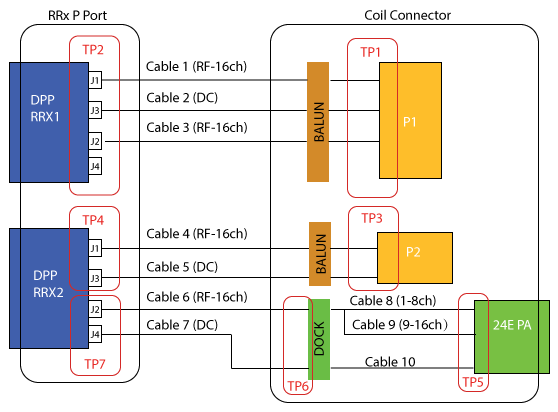
| System cable | Run#/ Part number |
|---|---|
| Cable 1 | M1355/ 5872437 |
| Cable 2 | M1510/ 5872437 |
| Cable 3 | M1354/ 5872438 |
| Cable 4 | M1357/ 5872437-2 |
| Cable 5 | M1356/ 5872437-2 |
| Cable 6 | 5872440 |
| Cable 7 | 5873490 |
| Cable 8 | 5914475 |
| Cable 9 | 5914476 |
| Cable 10 | 5914477 |
Connection when testing TP1
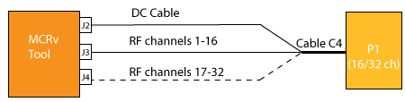
- Plug Cable C4 p-port adapter into P1 port on LPCA.
- On the other end Cable C4, connect 16w16 connector to MCRv tool J3.
- Connect DSUB25 connector to MCRv tool J2.
- If test on 32ch system, connect 16w16 connector to MCRv tool J4.
Connection when testing TP2
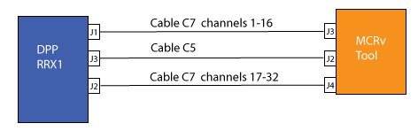
- Disconnect J1, J3 and J2 (only for 32ch system) cables from DPP RRX1 side.
- Connect cable C7 from DPP J1 to MCRv J3.
- Connect cable C5 from DPP J3 to MCRv J2.
- If test on 32ch system, connect cable C7 from DPP J2 to MCRv J4.
Connection when testing TP3
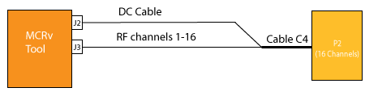
- Plug Cable C4 p-port adapter into P2 port on LPCA.
- On the other end Cable C4, connect 16w16 connector to MCRv tool J3.
- Connect DSUB25 connector to MCRv tool J2.
Connection when testing TP4
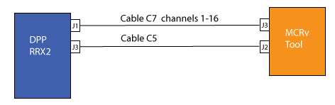
- Disconnect J1 and J3 cables from DPP RRx2 side.
- Connect cable C7 from DPP J1 to MCRv J3.
- Connect cable C5 from DPP J3 to MCRv J2.
Connection when testing TP5
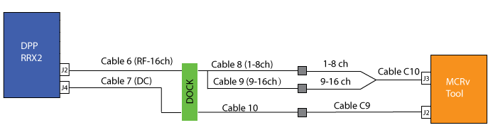
- Move the cradle inside the bore until free from the side guards.
- Release the cradle from the LPCA.
Figure 3. Releasing the cradle 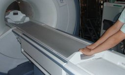
- Lift the cradle at the handle by 1 hand and use the other hand to insert the foam.
Figure 4. Inserting the foam 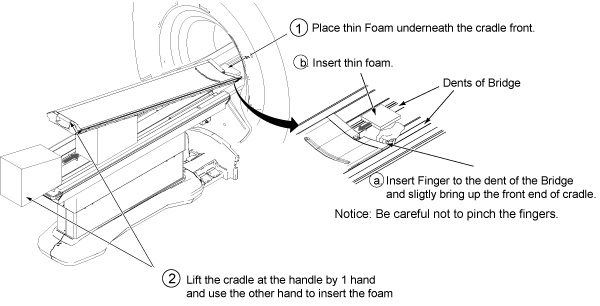
Note Foam is stored in Cart during Installation.Figure 5. Foam location 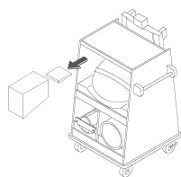
- Access to the Connectors below the Cradle.Notice: Wear the static electricity prevention wrist band when accessing the cables below cradle not to damage the electronics module.
Figure 6. Accessing the connectors 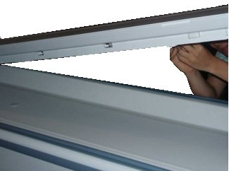
- Remove all screws which secured on the cable.
Figure 7. Removing the screws 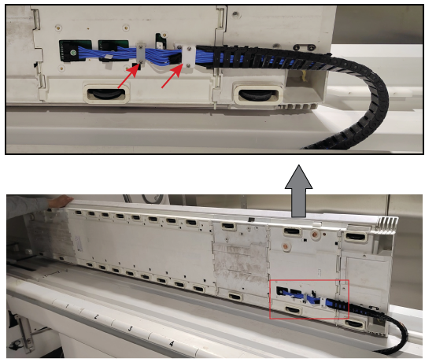
- Remove the corresponding connector.
Figure 8. Removing the corresponding connector 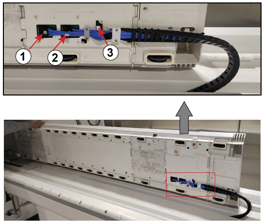
Item Description 1 RF cable (PA 1-8 Channel) 2 RF cable (PA 9-16 Channel) 3 DC cable (No Label) - Attach C9(DC cable) to PA coil DC cable and MCRv J2.
- Attach C10 1-8ch (RF cable) to PA coil RF cable and MCRv J3.
Connection when testing TP6
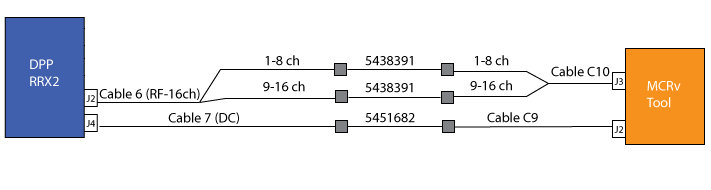
- Connect C10 1-8ch and 5438391 together, then connect C10 to MCRv J3 and connect 5438391 to PA coil RF cable.
- Connect C9 and 5451682 together, then connect C9 to MCRv tool J2 and connect 5451682 to the PA coil DC cable.
Connection when testing TP7
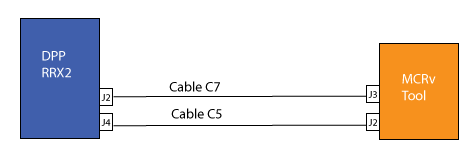
- Disconnect J2 and J4 cables from DPP RRx2 side.
- Connect cable C7 from DPP J2 to MCRv J3.
- Connect cable C5 from DPP J4 to MCRv J2.